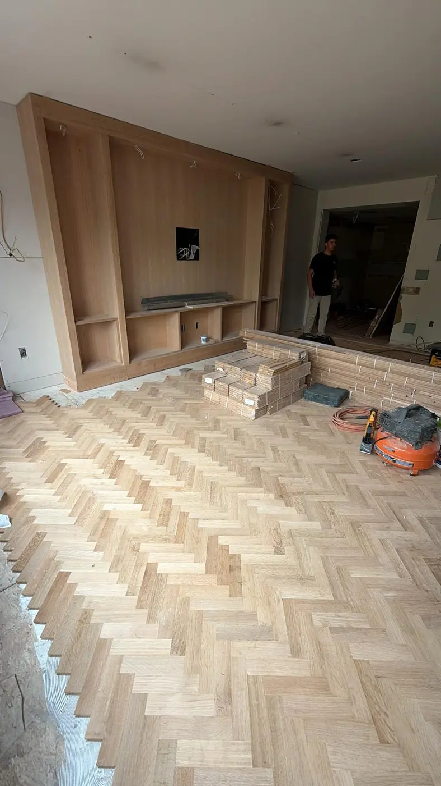
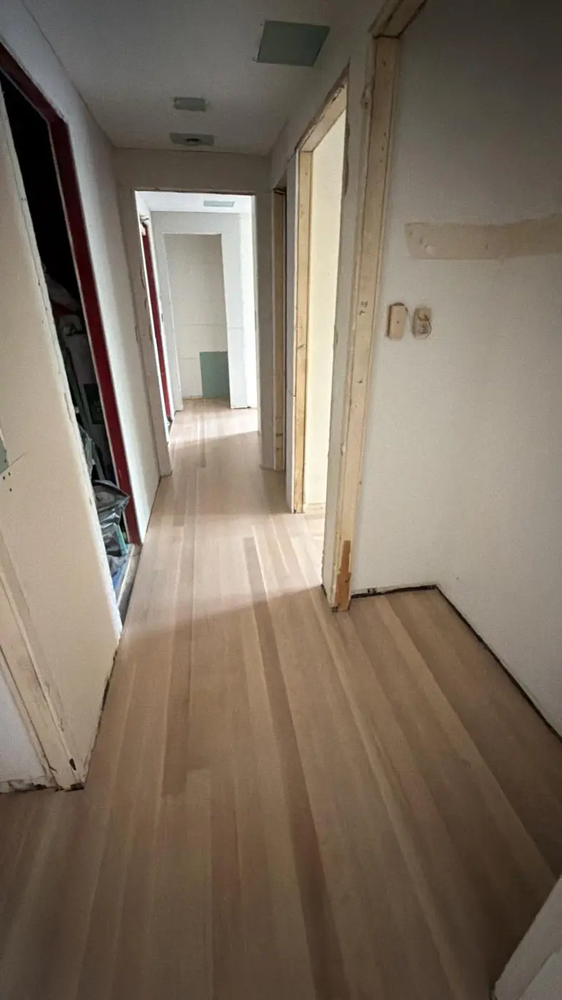
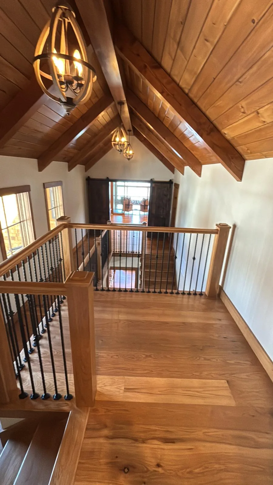
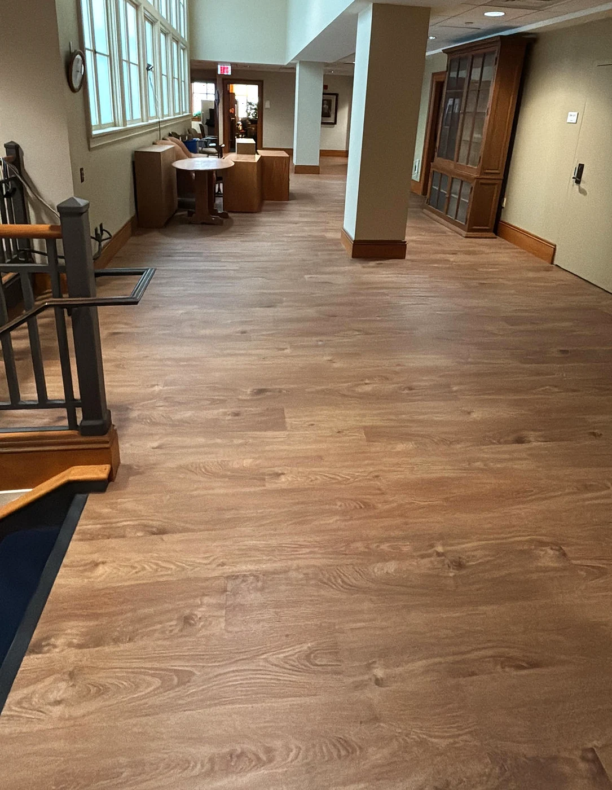

Hardwood Floor Installation Boston MA
Solid, engineered, and herringbone hardwood installed in Boston condos, brownstones, triple-deckers, and single-family homes by one insured crew from our Medford shop.
Call (978) 754-8751 Get a Free EstimateSolid, engineered, and herringbone hardwood installed in Boston condos, brownstones, triple-deckers, and single-family homes by one insured crew from our Medford shop.
Call (978) 754-8751 Get a Free EstimateHardwood floor installation Boston MA owners call us about is rarely a simple open room. It is a third-floor condo with an association that wants sound rules followed, a South End row house with a crooked old subfloor, or a triple-decker unit being gutted down to the studs. The wood is the easy part. The real work is reading the building: what the floor sits on, what the neighbors below will hear, how the material gets upstairs, and which install method the space actually allows. JPN sorts that out on the first visit and writes it into a line by line estimate, so the plan you approve is the plan we build.
These are photos from the Boston job described on this page, taken by our crew: white oak herringbone around the living room built-ins, laid out from a center line, and straight white oak plank through the hall and bedrooms, all sanded and finished in place in a natural tone.




In much of Greater Boston a crew pulls into a driveway and carries boxes through the side door. In Boston proper that is often not how it works. In Back Bay or Beacon Hill the street is tight and parking is scarce. In a condo building there may be one elevator, a loading window set by the management company, and quiet hours when no saw can run. We ask about all of it at the estimate, because a day lost to a blocked elevator is a day added to your project.
We also plan around the people next to you. In a triple-decker in Dorchester or a converted building in Brighton, your floor is somebody else's ceiling. That changes the underlayment, the fastening method, and sometimes the product itself. Getting it right keeps you on good terms with your neighbors and with your association, and it keeps the job from being stopped halfway through.

A new floor in a Boston home should look like it was meant to be there. In a brownstone with tall ceilings and original trim, a narrower oak plank or a herringbone in the parlor usually feels right. In a newer South Boston or Charlestown condo, a wider white oak plank with a clean natural finish tends to suit the bigger windows and simpler lines. We bring samples into your actual light, because a color that looks warm in a store can look flat on a north-facing floor.
Boston installs are priced by the square foot like anywhere else, but building access, condo rules, and the base under your floor move the total. These are typical Greater Boston ranges for planning; your own estimate is built from your rooms and your building.
| Type of installation | Typical range |
|---|---|
| Prefinished solid or engineered (materials + labor) | $8 to $14 per sq ft |
| Site-finished solid hardwood (install + sand + finish) | $10 to $16 per sq ft |
| Subfloor leveling, repair, or acoustic underlayment | Added per the estimate |
| Herringbone or chevron pattern | Priced higher for the added layout and cuts |
These ranges are for planning only. Your documented estimate lists materials, labor, prep, underlayment, and finish line by line, and the price you approve is the price you pay.

Refinishing is the smart move when the old wood allows it. A new install makes more sense when:
You get a written schedule with the delivery time, the elevator or access plan if there is one, and the install days.
We protect hallways, stairs, and elevator walls in shared buildings, keep the work area closed off, and contain dust so your neighbors are not living with it.
Prefinished and glue-down floors can usually take light foot traffic soon after, while site-finished floors need cure time. We tell you room by room when furniture can come back.
Many failed floors we get called to in the city failed because nobody planned for the building. Watch for:

Gut renovations, unit turnovers, and new construction in Boston run on tight schedules with many trades in one small space. We install for builders, general contractors, and property managers who need the floor done on the day it was promised.
Our own crew handles prep through the final board, we protect finished work in shared buildings, and we keep the site clean for the painters and finish carpenters who follow us.
Every Boston install starts with a documented estimate, so the number you approve is the number you pay, and the work follows the schedule we agreed on before the wood was delivered.
We are insured, we keep dust contained, and we film the job from bare subfloor to finished floor. We do not call it done until you have walked it with us.
One of our recent Boston jobs was a full renovation where the whole floor was new. The owners wanted a living room that felt special and the rest of the home calm and simple, so we used white oak two ways: herringbone in the living room, which also has built-in cabinetry, and straight white oak plank through the hallway and the bedrooms.
The work started below the wood. The base was OSB subfloor, and we prepared it first, checking it for flat and fastening it down so the new floor would stay quiet. With herringbone this matters even more, because every small dip shows up as a lifted point where the pieces meet.
Next came the layout. Before a single herringbone piece went down, we marked the pattern on the subfloor and started it from a center line, so the zigzag runs straight down the middle of the room and the cut pieces at each wall come out balanced. Around the built-ins, the pattern was planned so it meets the cabinetry cleanly instead of ending in thin slivers.
The hallway and bedrooms got straight plank in the same white oak, so the two layouts read as one floor. Once everything was down, the whole floor was sanded flat and finished on site in a natural tone, which lets the herringbone and the straight boards share the exact same color and sheen. We filmed the job from the bare OSB to the final coat, and that footage is the kind of real install you see on this page.
Nail-down is the classic method. Boards are fastened through the tongue into a wood subfloor over joists. It is the right choice in most single-family homes in West Roxbury or Roslindale and in many row houses where the floor sits on plywood or planks. It feels solid and works with both solid and engineered wood.
Glue-down means the floor is bonded to the base with a flooring adhesive. It is the normal method over concrete, and it is common in condos because the wood can be glued over an approved sound layer without long nails going through it. Engineered hardwood is the usual product here because its layered core stays stable on a slab.
Floating floors are not fastened at all. The boards lock or glue to each other and rest on an underlayment. They can be a good answer over a slab or an uneven older base where other methods do not fit, though they feel a little different underfoot. We look at your space and explain which method we would use and why, not just the one that is fastest.
In a condo, your floor sits on top of someone's ceiling. Footsteps, chair legs, and dropped keys travel down through the structure. That is why many Boston associations have written flooring rules, and why some ask for a minimum sound rating or a specific underlayment before hard flooring can go in over another unit.
Solid hardwood is usually nailed, and nailing through a thick sound mat is not a good match. Engineered hardwood can be glued directly to an acoustic underlayment made for that purpose, which gives the association what it asks for and still gives you a real wood surface. In newer concrete buildings, the slab makes glue-down the natural method anyway.
Before we order anything, we ask for the association's rules and match the product and underlayment to them. If the building wants paperwork, we provide the product details. It is much easier to get this right at the start than to explain to a board why a finished floor has to come back up.
Boston has a lot of old framing. In a triple-decker in Dorchester or Jamaica Plain, or a row house in the South End, the floor can slope toward the middle of the building, the original boards may be patched with plywood, and there may be layers of old flooring stacked on top of each other.
New hardwood will not hide those problems. It follows them. So in older buildings we take out what needs to come out, find the low spots and the loose areas, and bring the base back to a flat, firm surface. Sometimes that means fastening the old boards, sometimes adding a new layer of subfloor, and sometimes shimming or leveling a section.
We talk with you about what is practical. A house that has settled for a hundred years will not become perfectly level, but the floor should feel solid, stay quiet, and meet the next room without a trip edge. That is the standard we set before installing.
Some Boston floors sit on concrete: units in newer buildings, garden-level apartments, and finished basements in single-family homes. Concrete holds moisture, and wood laid over a damp slab will cup or come loose.
We test the slab before we choose the product. Over concrete we typically recommend engineered hardwood, glued down with an adhesive suited to slabs, or floated over the right underlayment when that fits the space better. Where moisture is a concern we use a proper barrier.
Height is another thing we plan for. Adding underlayment and wood raises the floor, and in a condo that can affect doors, the transition at the kitchen, and the meeting point at the entry. We work those out ahead so nothing has to be trimmed on the fly.
A good install schedule in Boston starts outside the unit. Where will the truck stop? Is there a loading zone, or does the building require a reserved elevator with protective pads? Are there hours when work noise is not allowed? Every building handles this differently.
We gather those details at the estimate and plan deliveries and saw work around them. In shared buildings we protect hallway floors, stairs, and elevator walls on the way in and out, and we keep cutting in a contained area so dust does not drift into common spaces.
This planning sounds small next to the floor itself, but it is often what decides whether a Boston job finishes on time. It also keeps your building management happy, which matters long after we leave.
When a Boston unit is gutted, walls move, kitchens open up, and the new floor has to tie the whole space together. We get involved early so the floor plan, the subfloor height, and the transitions to tile in the bath and kitchen are set before cabinets are installed.
We choose a starting line that keeps boards straight from the entry to the far wall, plan where the floor turns into halls and closets, and decide where a pattern like herringbone stops and straight plank begins. In the renovation above, the change from herringbone in the living room to straight plank in the hall was planned at the layout stage, not decided on the day.
Once the floor is down, we cover it so other trades can keep working, and we come back to finish or touch up at the end if the floor is site-finished. The goal is simple: the floor should be one of the last things you worry about in a renovation.
Boston is right next door to our Medford base, so JPN crews work across the city's neighborhoods every week and plan each install around the building, the parking, and the condo rules before the first board shows up. We work throughout Back Bay, South End, Beacon Hill, Jamaica Plain, Dorchester, West Roxbury, Roslindale, Charlestown, South Boston, and Brighton. Boston floors live in brownstones and row houses, triple-deckers split into units, condos carved out of older buildings, newer concrete buildings, and Colonials and Capes on the quieter streets of West Roxbury and Roslindale, plus a steady run of full gut renovations, so we know the floors under these homes and how to bring them back or build them new.
The same JPN crew works in the towns around Boston. Each local page covers costs, neighborhoods and real projects for that town:
Not on the list? We cover a 100-mile radius from Medford. See Hardwood Floor Installation across Greater Boston.
Real floors from JPN projects across Medford and Greater Boston, done right, on time, and dust-free.
Founded and run by Janderson Francisco, JPN is a full-service hardwood flooring company based in Medford. Every estimate is documented line by line, every job is dust-contained, and we film our work from bare wood to final coat so you see exactly what you paid for.
Get your free estimateReal homeowners and builders across Greater Boston, straight from our Google Business Profile.
I had an excellent experience with JPN Hardwood Floors! Their team was professional, punctual, and paid close attention to every detail. The quality of their work exceeded my expectations, and the floors turned out absolutely beautiful. They kept everything clean and completed the project on time. I highly recommend them to anyone looking for reliable, high-quality flooring services. Five stars!

We've been working with JPN Hardwood Floors for a long time, and they consistently do an excellent job. Their entire team is professional, reliable, and takes great pride in their work. The quality of their hardwood flooring work is always great, and they are great to work with. We highly recommend them to anyone looking for a trustworthy and skilled hardwood flooring company!
I'm impressed by the excellence of the work delivered. You can truly see the care and professionalism in every detail.
Amazing work! Professional, reliable and highly recommend!

Very attentive, has great prices, and the work is simply impeccable. Thank you very much!
A clean home when we're finished and the completion date we quoted, or we make it right. Licensed, fully insured, and serving Medford, MA within 100 miles.